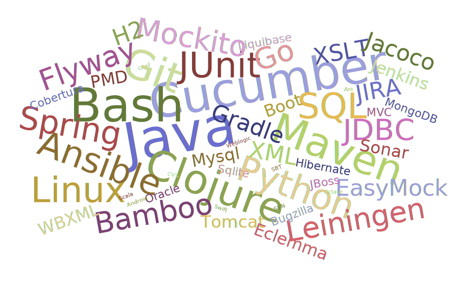

I am a quick learning, hardworking and efficient software engineer.
I enjoy a challenge and am able to adapt quickly to varying demands.
I am a good communicator and can work well, both independently and within a team.
I have over 12 years experience creating and maintaining a variety of software products
CME Group is the world's largest and most diverse derivatives marketplace, bringing buyers and sellers together through the CME Globex electronic trading platform
August 2013 to present
I'm working on a collection of low latency applications, predominantly in Java with an Oracle database. I lead a small team involved in feature development, responsible for all stages of the software development lifecycle. We use JUnit, Mockito and Cucumber for testing and documentation, Maven for building, Git for version control and Bamboo and Jenkins for Continous Integration. I've introduced Ansible for orchestrating deployments and DBUnit for testing DB integration.
Kana provide a variety of customer service solutions to small and large businesses and to the public sector including a large number of local councils in the UK
October 2012 to August 2013
I was working with the Product Manager to lead a team of 6-10 engineers in producing a new web based self service product with a RESTful Hypermedia back end. Reporting to the VP of Development and Head of Project Delivery, I was responsible for estimation, scheduling, design, implementation, documentation, testing, review and delivery of features within the product
Mformation provide a mobile device management solution to mobile operators and enterprises including Vodafone, Telefonica(O2) and TMobile.
December 2006 to September 2012
I was working in an Agile development framework, reporting to the project managers. I was responsible for 2-3 back end components of a Java web app deployed in JBoss and Weblogic, including the requirement capture, design, implementation and automated testing of the components. I became a reference point for developers on many areas of the product, on design patterns and the use of technologies like Spring and Hibernate.
I love learning new technologies and techniques, I'm regularly at various meetups including Belfast FP, Bash and Belfast Gophers, I've completed several online courses from Lynda or Coursera including Machine Learning, Functional Programming in Scala and Algorithms and I've worked on a few open source projects such as Cucumber JVM the Maven Release plugin or my own Ansible Maven plugin
The word cloud below shows some of the technologies I've worked with in the last few years
| Year | Establishment | Level | Course | Result |
|---|---|---|---|---|
| 2004 | Loughborough University | Masters Degree | Systems Engineering | Second Class, First Division |
|
Managing and implementing complex, interdisciplinary projects through all their phases including specification, design, development and maintenance
|
||||
| 1999 | Norwich School | A Level | Mathematics | A |
| Physics | A | |||
| Further Mathematics | B | |||
| French | C | |||
| Awarded Norfolk County Scholar | ||||
I climbed the 3 highest peaks in England, Scotland and Wales in 24 hours
I've run marathons in London and Belfast
I planned, organised and cycled from Mizen to Malin over 3 days with a few friends
I took part in L'Etape du Tour, riding a 200km stage of the Tour de France with 4 climbs over 1200m